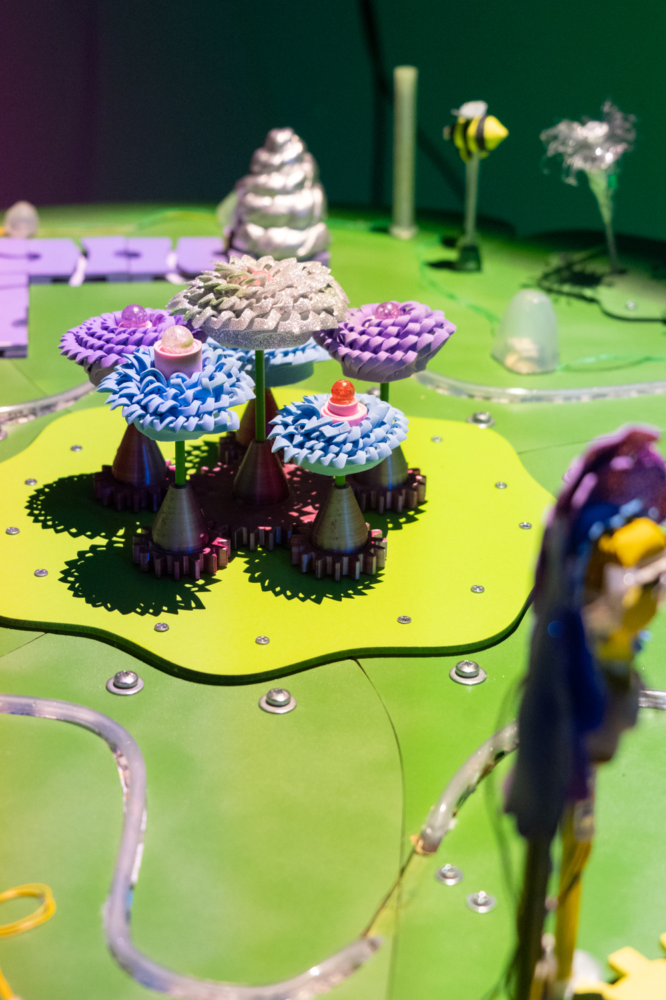
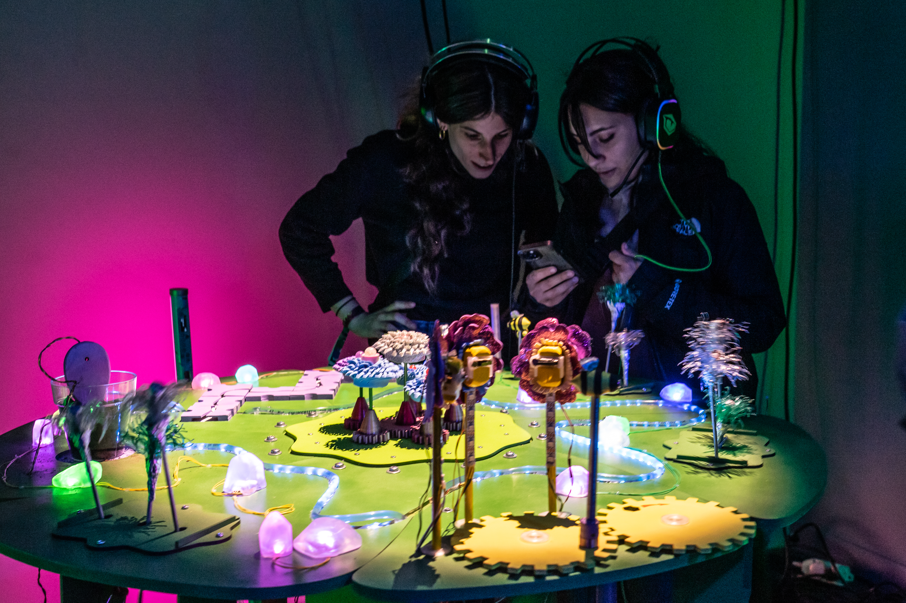
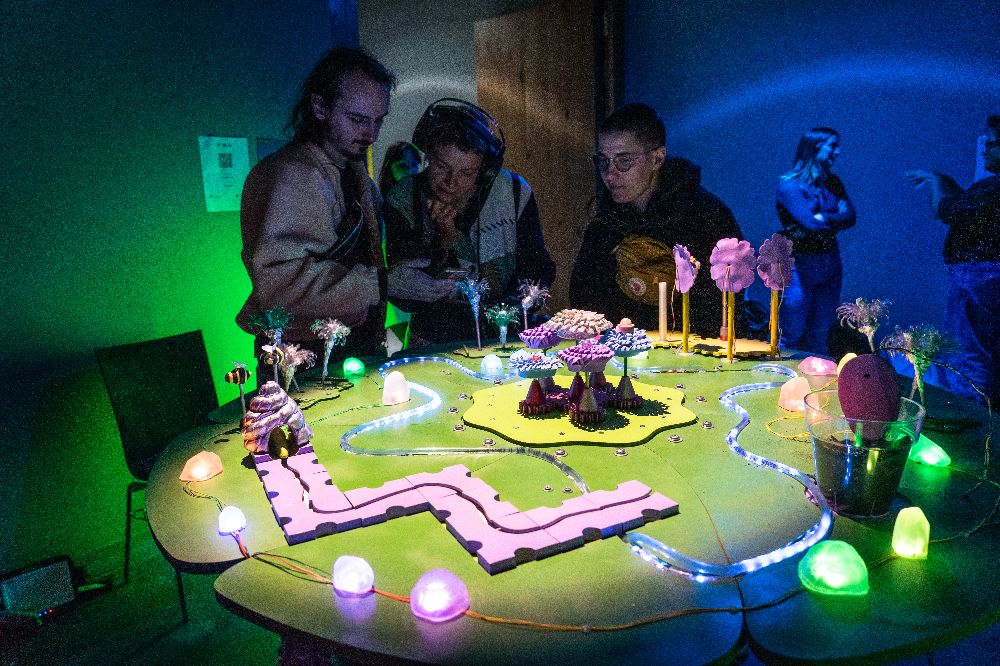
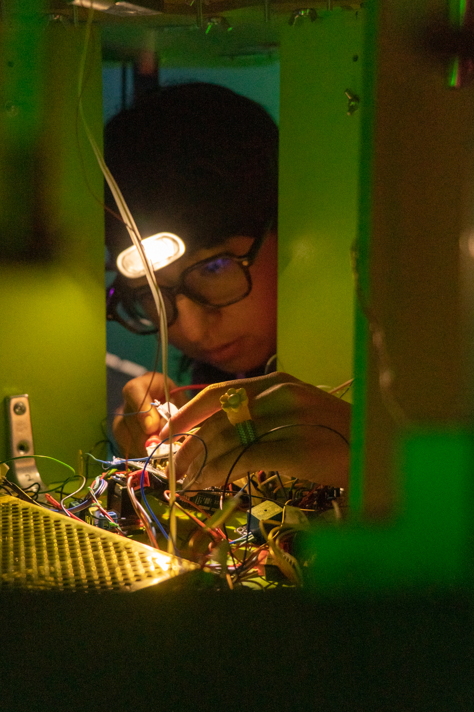
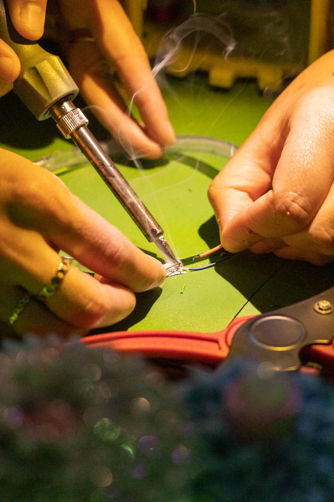
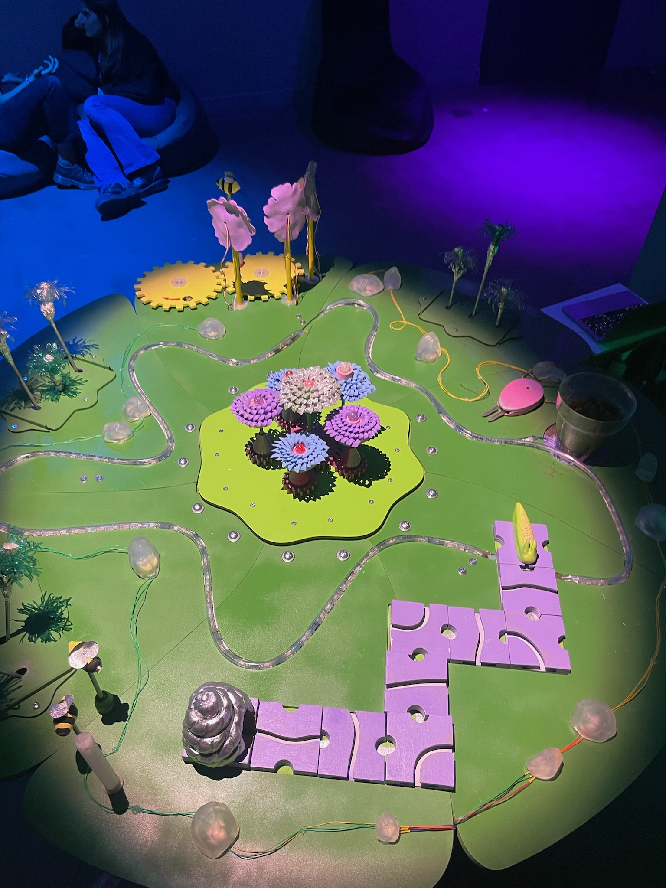

Winner of the Amaze Fest 2025 Explorer Award. Exhibited at the 2025 BCN Games Fest. Featured on the Arduino Blog.

Flora is in crisis. This electronic garden has been cursed. The flowers no longer bloom, the snails have lost their shells, the river has run dry, and the entire landscape lies still, as if everything had shut down. It seems that all is lost, but with help, this ecosystem will shine again. This electronic garden needs to be cared for, someone to contemplate it and figure out how to reintegrate each species back into the cycle.


Flora is an interactive installation inspired by a natural ecosystem. It arises from the need to challenge individualistic dynamics and our lack of awareness of certain natural symbioses. The installation invites players to reconnect with forgotten skills, such as play and collaboration. It serves as a space for exploration, listening, and becoming part of a greater cycle. Players uncover the relationships between organisms and help them communicate and thrive in harmony.


This circular board features three-dimensional objects that simulate life through electronic elements, functioning in unity and cooperation. Movements are powered by four Arduino boards that communicate with six sensors and nine actuators. For example, planting a seed is simulated by inserting a moisture sensor into damp soil. When the sensor detects increased moisture, the code activates the water pump and other actuators, simulating the flow of a river and the blooming of flowers.
Playtime connects us with the freedom of being in a space where rules are shaped by unique experiences. Sometimes, there may be no purpose at all. Play for the joy of playing, and allow yourself to be surprised by the sound, colors, and textures.
